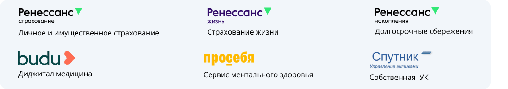

О фондах
«{{fund1_name}}» {{fund1_description}}
{{fund1_stat1}}
клиенты группы
{{fund1_stat2}}
активы группы
{{fund1_stat3}}
на рынке страхования
{{fund1_ipo_text}}
Доходность за {{fund1_yield_year}}
{{fund1_yield_value}}
Диверсифицированный игрок на финансовом рынке

Открыть ПДС
{{fund2_description}}
Доходность ПДС
{{fund2_yield_year}}
{{fund2_history_years}}
на рынке пенсионных услуг
{{fund2_benefit_pct}}
совокупной выгоды по ПДС получили наши клиенты за 2024 год
{{fund2_license}}
С правилами формирования долгосрочных сбережений вы можете ознакомиться на сайте npff.ru
Сбережения застрахованы
Агентство по страхованию вкладов гарантирует сохранность сбережений до {{fund2_insurance_cap}}, кроме того без ограничения защищены все средства переведённые из ОПС, средства гос. поддержки и начисленный на них доход
Открыть ПДС